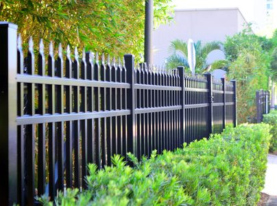

Height and style
A 4-foot open front fence and a taller pool style are different layouts.
Aluminum fencing
Ornamental aluminum for front yards, pool barriers, and lines that need to follow a slope. It stays open, so it is the fence you choose when you want the yard marked and still visible.


Aluminum is the right call for a 4-foot front yard inside the City of Jacksonville, a pool you need to see through, or a sloped side line where panels can rack. It is the wrong call when the job is a privacy screen. Wood or vinyl does that work. Aluminum also handles pool chemicals and humidity better than bare steel.
Finishes we install most often are black, bronze, white, khaki, and green. Satin reads flatter in the sun. Gloss reads sharper. We order the color that was approved, because aluminum is not a stain-it-later material. On a pool, Onslow County requires a barrier at least 4 feet high around water 24 inches deep or more. Latch and gate hardware still have to match the code the building department is using that season.
We price the line on your lot. These are the pieces that move the number.
A 4-foot open front fence and a taller pool style are different layouts.
Standard black is easier to schedule than a less common color.
Racking a panel down a slope takes layout time a flat run does not.
A pool gate with self-closing hardware is a different piece from a simple walk gate.
Ornamental fence is priced on the measured line, including corners.
Removing an old rusted steel fence is part of the quote when it is in the way.
No. Aluminum is the light ornamental fence that does not rust the way steel does. It is the usual choice for pools and front yards. Steel needs a different maintenance plan, especially in salt air.
It is a common pool barrier because you can see through it and it handles chlorine better than steel. Onslow County requires a barrier at least 4 feet high around a pool or spa that holds 24 inches of water or more. Gate hardware still has to match the code the inspector is using.
The finishes we install most often are black, bronze, white, khaki, and green, in gloss or satin. We match the color to the house and to any HOA sheet before the material is ordered.
Ornamental aluminum can rack to follow a mild grade, which is why it fits a yard that is not flat. A steep drop may still need a stepped layout. We decide that on the lot.
Not by itself. It is an open fence. If the job is a screen from the neighbor, wood or vinyl privacy is the product. Aluminum fits front yards, pools, and places where a shorter open fence is what the city allows.
Inside Jacksonville, a fence in front of the house is limited to 4 feet, and side or rear residential fences are limited to 6 feet. A 4-foot aluminum fence is a common way to mark a front yard inside that rule.